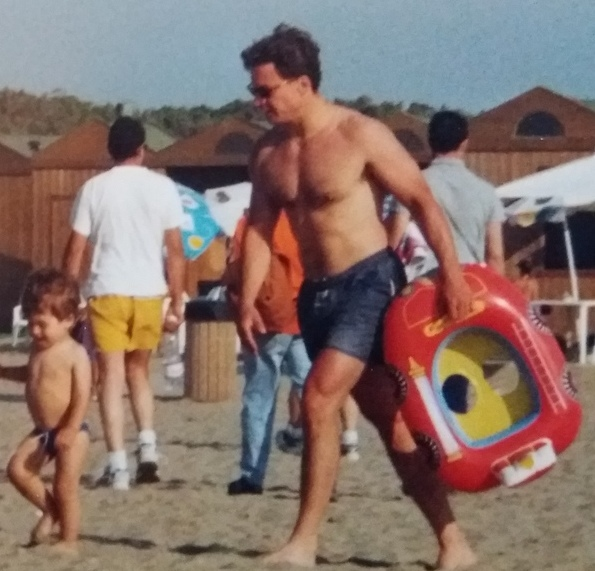

Bodybuilding and longevity
Barely the same….I did not make substantial progress but….
and more importantly, this is my preferred channel of communication with my son Niccolo’. This is how I keep the dialogue with my son despite I never lived with my family because of my job. Good manners, discipline with diet and physical exercise is my legacy (and some good book).
Ferrara (Italy). The town where I spent 15 years of my life. Six years for the Medical degree, 5 years for the specialization in Endocrinology and Metabolism and 4 or 5 for my PhD. That is the entrance of my first gym in 1982 (Via XX Settembre). It’s still there. I think it was the time of the first Rambo movie.
I started, as many of us at that time, without guidance. No Internet. No magazines. The gym was fairly well equipped but the notion about the importance of the diet was not emphasized as much as today. My diet was poor. My meals were mainly those from the University cafeteria or milk and biscuits when prepping exams (easily 15 hours of study every day). I don’t remember my exercise routines.
For sure I didn’t know or felt and leveraged the muscle-mind connection. But I have been consistent. Consistently inefficient. I got the medical degree in 1987, then spent 15 months in the army. I started my specialization in Endocrinology and Metabolism in 1990.This picture was taken I guess in 1992, before leaving for Graz where I spent one year and joined a local gym. I knew that someone important in the world of bodybuilding came from Graz. I knew only much later that his name was Arnold Schwarzenegger.
Few years later I was in US as fellow in the Frederikson lab at NHLBI, NIH, Bethesda (below is the picture of the Building 10 where my lab was located). I was living In Rockville and the name of the Gym was Aero-Flex. It was in Fisher Lane.
Two things I remember. The gym was gigantic (in my view at that time). I was already there at 6 am. And at 8.30 am I was in the lab. Again the diet was poor and probably also my routines. I don’t remember me doing squat or dead-lift. Big mistakes that are affecting my overall structure and strength. I regret I missed those two fundamental exercises.
At the age of 39, after my dreams of academia career where broken in pieces and I joined the pharma industry, I moved to Pisa.
I joined a local gym and despite a growing family (Edoardo was one year old) and a job requiring frequent traveling I was still motivated and doing my best. Probably trying to keep my protein intake as much as possible high but no mayor improvements. I don’t think I was taking anything, not even proteins powder.

In 2000 I moved to Mestre (Venice). My second son (Niccolo’) was coming and if I remember I have not able to train for a couple of years or maybe more.
For sure I started to train again in 2004. At that time the stress was very high (company re-org) and I got panic attacks and psoriasis. I didn’t join any gym but I bought basic equipment and trained at home. Then I moved to Verona in 2007 and joined a local gym.
In 2010 I moved to Basel (CH) where I joined the company training facility. Internet started to provide tips and videos. The diet was completely wrong and I gained roughly 8 kg, fat mainly.
2022 I training more consistently.
At the age of 61, now I’m training at home and care more about the diet.
What I have learned in these years:
consistency: diet (more important) and training
compound multi-joints movements are extremely important especially at the beginning of the session
squat: light or heavy but squatting often is the key for longevity which translates in self-sufficiency at older age. I have two hernias documented via RMN but no pain since I squat regularly
Mind-muscle connection: this is the principle that guides any movement or exercise. The weight per se is not important as compared to the mind-muscle connection. The time under tension and the quality of the contraction are affected by this connection. The warming up at the beginning is only partially referring to the thermogenesis. Sets with light weight, someone call them the feeling sets, are meant to develop the connection between the brain and the muscle in order to have the former governing the latter and not vice-verse.
multi-frequency: training the same group of muscles at least 2-3 times per week. 40 sets for big muscles per week and maybe 30 sets per week for the smaller. One session lasts roughly one hour. Session of short duration are a way to overcome the boredom of doing over and over again the same exercise with the same intensity. No doubts that high volume works. But keep it up for 40 years is challenging.
walking > 5-6 km per day (or equivalent). This helps to keep the metabolism up. I use this time to prepare my meetings mentally. Probably not every day but it’s very effective to lose weight or fat.
I’m not a bodybuilder. However I’m using and learn every day bodybuilding techniques to mantain or improve, if possible, flexibility and strength.
I think bodybuilding techniques could help geriatricians and physiotherapists. Probably in 5 years this will be mainstream.
What I don’t follow because I think is wrong is the extreme reduction in body fat pursued in US. The US stereotype pushes for bodies with < 10 or even 5 % of fat. 10 % is for kids or for the stage (I think Mr Olympia should change parameters). I think thresholds should be adjusted for age and there are tables indicating the most correct body composition. Like for BMI epidemiloogical studies indicate an increase in mortality for extremely low or high body fat percentage. Bodybuilders on stage show < 5% of body fat. I doubt it’s healthy.
TRT (testosterone replacement therapy in the range 200 mg /week) as a way to take testosterone inappropriately. Looking at youtube videos it seems that TRT is the most natural things to do to replace the natural drop in testosterone in plasma with age. Champions proudly share that are on TRT after they have been abused steroids for years. This is how it works in US.
Like for estrogens in women, testosterone in men should be replaced only in case of signs or symptoms of deficit. I don’t think that the natural sarcopenia age-related is a valid motivation. It’s a misuse.